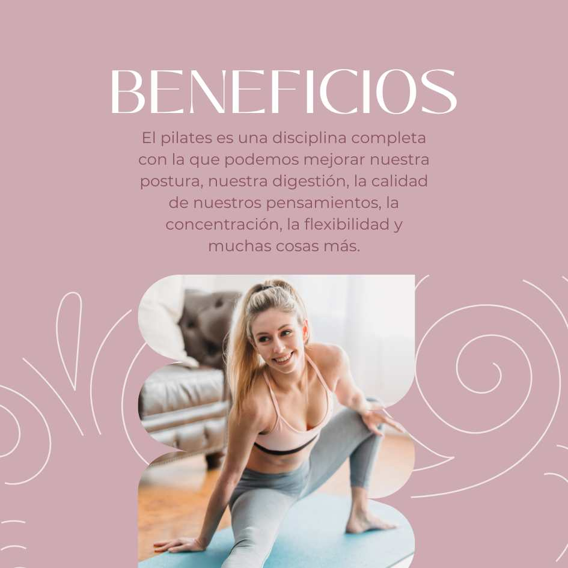

No lo olvides:
La mejor medicina para mantener una mente sana y un cuerpo sano es nuestra paz interior y exterior,
aquí te daremos varios tips para que encuentres tu estabilidad mental y física. Es el tiempo de cambiar tu vida
a una vida saludable, alegre, entusiasta y con nuevas metas y objetivos.
Plantearte nuevos objetivos, nuevas metas, proyectarte a lo positivo, a crecer como persona, a crecer profesionalmente, incluso a cambiar el lugar donde vives.

El deporte trae bienestar para tu mente y para tu salud sin dejar a un lado que tu físico se mantiene en buena forma, te ayuda a relajarte a rodearte de nuevas personas. A mucha variedad es probar y encontrar el que más te guste y el que te haga sentir bien y desconectada de todo.
Divertirse, salir, bailar, reír, hablar es pate de una excelente terapia y que mejor que compartirlo con esa maravillosas personas que están ahí para acompañarte y hacerte tener un tiempo muy especial.
Salir, conocer nuevos lugares incluso en ese viaje podrás conocer nuevas personas. Viajar o salir de tu entorno hace cambiar muchas cosas hay mucho por descubrir y tú debes ser parte de ese descubrimiento.
Es el tiempo de que aprendas a valorarte, amarte, aceptarte y entender que eres una piedra preciosa que vale muchísimo, no dude de tu belleza tanto interior como exterior, que ninguna palabra afecte tu autoestima, todo lo contrario levantate y vete en el espejo y descubre esa maravillosa mujer que hay en ti.
No lo olvides: